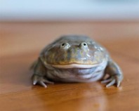

Budgett's Frog
Budgett's Frogs are native to South America. They are intelligent and often kept as pets because of their appearance. They have also been called Freddy Krueger frogs for their long fingers and aggressive nature. These frogs can grow up to five inches in size. They are nocturnal and sometimes show cannibalistic behavior. When threatened by a predator, the Budgett's frog will raise up on its legs and try to look as large as possible. It may also lunge for the perceived threat, make noises and bite.